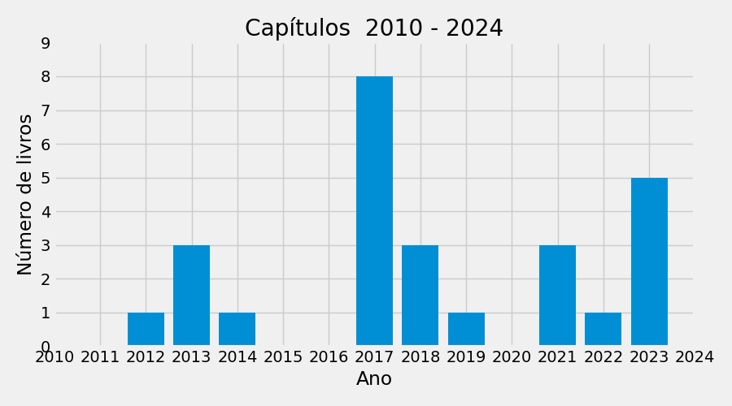

Lattes: http://lattes.cnpq.br/8664385553515842
Última atualização: 12-09-2024
ORCID: nan
Lattes: http://lattes.cnpq.br/4137381662041428
Última atualização: 23-05-2024
ORCID: https://orcid.org/0009-0002-7327-0549

| FULL_NAME | 2012 | 2013 | 2014 | 2017 | 2018 | 2019 | 2021 | 2022 | 2023 | TOTAL | |
|---|---|---|---|---|---|---|---|---|---|---|---|
| 0 | Eduardo Alves Portela Santos | 1 | 3 | 1 | 8 | 3 | 1 | 3 | 1 | 5 | 26 |

| FULL_NAME | 2011 | 2012 | 2013 | 2014 | 2016 | 2017 | 2018 | 2019 | 2020 | 2021 | 2022 | 2023 | TOTAL | |
|---|---|---|---|---|---|---|---|---|---|---|---|---|---|---|
| 0 | Eduardo Alves Portela Santos | 1 | 1 | 3 | 3 | 1 | 12 | 2 | 6 | 10 | 6 | 1 | 4 | 50 |
| 1 | Pedro Vinícius Eckel Moreira | 0 | 0 | 0 | 0 | 0 | 0 | 0 | 0 | 0 | 0 | 0 | 1 | 1 |
| 2 | Total | 1 | 1 | 3 | 3 | 1 | 12 | 2 | 6 | 10 | 6 | 1 | 5 | 51 |
Nesta secção é apresentada a relação da produção de artigos classificada pelo qualis. Sendo que na Figura e na primeira Tabela, cada publicação é contabilizada para apenas umautor. Na segunda Tabela a mesma publicação é contabilizada para mais de um autor.

| FULL_NAME | A1 | A2 | A3 | A4 | B2 | XX | TOTAL | |
|---|---|---|---|---|---|---|---|---|
| 0 | Eduardo Alves Portela Santos | 17 | 2 | 2 | 1 | 3 | 25 | 50 |
| 1 | Pedro Vinícius Eckel Moreira | 0 | 0 | 0 | 1 | 0 | 0 | 1 |
| 2 | Total | 17 | 2 | 2 | 2 | 3 | 25 | 51 |
| FULL_NAME | A1 | A2 | A3 | A4 | B2 | XX | TOTAL | |
|---|---|---|---|---|---|---|---|---|
| 0 | Eduardo Alves Portela Santos | 17 | 2 | 2 | 1 | 3 | 25 | 50 |
| 1 | Pedro Vinícius Eckel Moreira | 0 | 0 | 0 | 1 | 0 | 0 | 1 |

Nesta secção é apresentada a relação das orientações concluidas dos pesquisadores. Na primeira Tabela consta um resumo do número de orientações de Mestrado e Doutorado no PG concluídas no período definido. Na segunda Tabela consta a relação de todas as orientações concluídas do pesquisador. Para consultar o nome do orientado e demais detalhes, consulte a produção individual do pesquisador.
| FULL_NAME | TOTAL | |
|---|---|---|
| 0 | Total | 0 |
| FULL_NAME | DOUT | IC | MEST | TCC | TOTAL | |
|---|---|---|---|---|---|---|
| 0 | Eduardo Alves Portela Santos | 12 | 30 | 21 | 3 | 66 |
| 0 | Total | 12 | 30 | 21 | 3 | 66 |
Nesta secção é apresentada a relação das orientações em andamento dos pesquisadores. Na primeira Tabela consta um resumo do número de orientações de Mestrado e Doutorado em andamento no PG. Na segunda Tabela consta a relação de todas as orientações em andamento do pesquisador. Para consultar o nome do orientado e demais detalhes, consulte a produção individual do pesquisador.
| FULL_NAME | TOTAL | |
|---|---|---|
| 0 | Total | 0 |
| FULL_NAME | DOUT | MEST | TOTAL | |
|---|---|---|---|---|
| 0 | Eduardo Alves Portela Santos | 1 | 9 | 10 |
| 0 | Total | 1 | 9 | 10 |
Nesta secção é apresentada a relação da produção individual dos pesquisadores. As produções summarizadas são: Aulas ministradas, projetos de extensão, projetos de pesquisa, livros, capítulos e artigos (contabilizados para mais de um autor.
| INSTITUTION | YI | MI | YI | MF | DEGREE | TYPE | TITLE | |
|---|---|---|---|---|---|---|---|---|
| 0 | Pontifícia Universidade Católica do Paraná | 1996 | 3 | 2024 | nan | Engenharia de Controle e Automação | GRADUACAO | ['Matemática Discreta e Lógica Computacional', 'Sistemas a Eventos Discretos', 'Sistemas Industriais'] |
| 1 | Pontifícia Universidade Católica do Paraná | 2002 | 3 | 2024 | nan | Engenharia de Produção e Sistemas | POS-GRADUACAO | ['Matemática Discreta', 'Sistemas a Eventos Discretos'] |
| 2 | Universidade Federal do Paraná | 2014 | 08 | 2024 | nan | Administração | GRADUACAO | ['Logística de Distribuição', 'Logística de Suprimentos', 'Sistemas de Produção'] |
| NATURE | YEAR | YEAR_FIN | TITLE | NAO | SIM | |
|---|---|---|---|---|---|---|
| 0 | DESENVOLVIMENTO | 2010 | 2024 | Sistema de informação de chão de fábrica: técnicas e ferramentas para auxílio a gestão da manutenção | 0 | 1 |
| 1 | DESENVOLVIMENTO | 2016 | 2017 | Proposição e desenvolvimento de um framework para a melhoria de processos da Renault do Brasil | 0 | 1 |
| 2 | DESENVOLVIMENTO | 2017 | 2018 | Proposição de um programa de melhoria dos processos e base tecnológica da Renault do Brasil com base nos conceitos e requisitos da Indústria 4.0. | 1 | 0 |
| 3 | DESENVOLVIMENTO | 2017 | 2024 | Desenvolvimento de Dimensões de Análise (Analytics) e Decisionais no Gerenciamento de Ativos e Manutenção na Plataforma Manusis 4.0 | 1 | 0 |
| 4 | DESENVOLVIMENTO | 2017 | 2024 | Otimização no Gerenciamento de Ativos e Gerenciamento da Manutenção na Indústria 4.0 | 1 | 0 |
| 5 | DESENVOLVIMENTO | 2017 | 2024 | Project Management Analytics: exploração de técnicas de mineração de dados e processos para a análise de dados históricos de projetos | 1 | 0 |
| 6 | DESENVOLVIMENTO | 2017 | 2024 | Projeto de desenvolvimento de aplicações de monitoramento integradas envolvendo hardware customizável e plataforma de software de supervisão em nuvem | 0 | 1 |
| 7 | DESENVOLVIMENTO | 2018 | 2024 | Proposta de programa para o estudo, desenvolvimento e aplicação de novas tecnologias para o aprimoramento de processos com ênfase na melhoria da qualidade final dos produtos e aumento da eficiência produtiva da Renault do Brasil | 1 | 0 |
| 8 | DESENVOLVIMENTO | 2018 | 2024 | Sistema de Informação para o suporte a gestão de operações e manutenção | 0 | 1 |
| 9 | DESENVOLVIMENTO | 2019 | 2024 | Soluções computacionais para suporte a gerenciamento da manutenção | 0 | 1 |
| 10 | PESQUISA | 2008 | 2013 | Rede de Cooperação Acadêmica em Sistemas a Eventos Discretos, Sistemas Híbridos e Controle Robusto | 1 | 0 |
| 11 | PESQUISA | 2010 | 2022 | Mineração de processos para a análise e diagnóstico de processos de negócio. | 0 | 1 |
| 12 | PESQUISA | 2010 | 2022 | Sistemas de Informação de Chão de Fábrica para o suporte a tomada de decisão na manutenção | 0 | 1 |
| 13 | PESQUISA | 2013 | 2024 | Enterprise Interoperability Assessment - EIA | 1 | 0 |
| 14 | PESQUISA | 2014 | 2022 | Gestão e Organização por Processos - aplicação em Healthcare | 0 | 1 |
| 15 | PESQUISA | 2016 | 2017 | Proposição e desenvolvimento de um framework para a melhoria de processos da Renault do Brasil | 0 | 1 |
| 16 | PESQUISA | 2022 | 2024 | Mineração de Processos em Operações | 0 | 1 |
| 17 | - | - | - | Total | 7 | 10 |
| INSTITUTION | PUPIL | DOUT | IC | MEST | TCC | |
|---|---|---|---|---|---|---|
| 0 | Pontifícia Universidade Católica do Paraná | Alan Fassarella Shunck | 0 | 1 | 0 | 0 |
| 1 | Pontifícia Universidade Católica do Paraná | Alexandre Checoli Choueiri | 1 | 0 | 0 | 0 |
| 2 | Pontifícia Universidade Católica do Paraná | Arthur Maria do Valle | 1 | 0 | 0 | 0 |
| 3 | Pontifícia Universidade Católica do Paraná | Carime Kotekoski | 0 | 2 | 0 | 0 |
| 4 | Pontifícia Universidade Católica do Paraná | Cesar Luiz Rizatti Júnior | 0 | 1 | 0 | 0 |
| 5 | Pontifícia Universidade Católica do Paraná | Cleiton Ferreira dos Santos | 0 | 0 | 1 | 0 |
| 6 | Pontifícia Universidade Católica do Paraná | Danielle Pedrotti Silveira | 0 | 0 | 0 | 1 |
| 7 | Pontifícia Universidade Católica do Paraná | Danilo Orion Valério | 0 | 0 | 1 | 0 |
| 8 | Pontifícia Universidade Católica do Paraná | Deise Cristina Buzzi | 1 | 0 | 1 | 0 |
| 9 | Pontifícia Universidade Católica do Paraná | Deisy Brigid De Zorzi Dalke | 0 | 1 | 0 | 0 |
| 10 | Pontifícia Universidade Católica do Paraná | Edson Ruschel | 1 | 1 | 1 | 0 |
| 11 | Pontifícia Universidade Católica do Paraná | Ewerton Gusthavo Gorski | 0 | 0 | 1 | 0 |
| 12 | Pontifícia Universidade Católica do Paraná | Flavio Piechnicki | 1 | 0 | 0 | 0 |
| 13 | Pontifícia Universidade Católica do Paraná | Flávio Piechnicki | 0 | 0 | 1 | 0 |
| 14 | Pontifícia Universidade Católica do Paraná | Fábio Pegoraro | 1 | 0 | 0 | 0 |
| 15 | Pontifícia Universidade Católica do Paraná | Gabriel Beraldo | 0 | 1 | 0 | 0 |
| 16 | Pontifícia Universidade Católica do Paraná | Gabriela da Silva Dias | 0 | 1 | 0 | 0 |
| 17 | Pontifícia Universidade Católica do Paraná | Giovani Antonio Bordini | 1 | 0 | 0 | 0 |
| 18 | Pontifícia Universidade Católica do Paraná | Giovanni Gonçalves Condado | 0 | 2 | 0 | 0 |
| 19 | Pontifícia Universidade Católica do Paraná | Gustavo Dering Barddal | 0 | 0 | 1 | 1 |
| 20 | Pontifícia Universidade Católica do Paraná | Gustavo Riz | 0 | 0 | 1 | 0 |
| 21 | Pontifícia Universidade Católica do Paraná | Gustavo Yamada Ito | 0 | 0 | 0 | 1 |
| 22 | Pontifícia Universidade Católica do Paraná | Hygor Guilherme Maiorki | 0 | 2 | 0 | 0 |
| 23 | Pontifícia Universidade Católica do Paraná | Hygor Maiorki | 0 | 0 | 1 | 0 |
| 24 | Pontifícia Universidade Católica do Paraná | José Marcelo Almeida Prado Cestari | 1 | 0 | 0 | 0 |
| 25 | Pontifícia Universidade Católica do Paraná | Julia Yumi Maruyama Moura | 0 | 1 | 0 | 0 |
| 26 | Pontifícia Universidade Católica do Paraná | Julio Cesar Battirola Filho | 0 | 0 | 1 | 0 |
| 27 | Pontifícia Universidade Católica do Paraná | Letícia Kist Mantovani | 0 | 1 | 0 | 0 |
| 28 | Pontifícia Universidade Católica do Paraná | Lucas Roberto Ferreira | 0 | 1 | 0 | 0 |
| 29 | Pontifícia Universidade Católica do Paraná | Lícia Cristina Santos | 0 | 0 | 1 | 0 |
| 30 | Pontifícia Universidade Católica do Paraná | Marina Amarante | 0 | 1 | 0 | 0 |
| 31 | Pontifícia Universidade Católica do Paraná | Matheus Weil | 0 | 1 | 0 | 0 |
| 32 | Pontifícia Universidade Católica do Paraná | Osvaldo da Silveira Junior | 0 | 2 | 0 | 0 |
| 33 | Pontifícia Universidade Católica do Paraná | Pedro Gomes | 0 | 0 | 1 | 0 |
| 34 | Pontifícia Universidade Católica do Paraná | Pedro Henrique Bertoldi | 0 | 1 | 0 | 0 |
| 35 | Pontifícia Universidade Católica do Paraná | Rafael Araujo Kluska | 0 | 1 | 0 | 0 |
| 36 | Pontifícia Universidade Católica do Paraná | Ramon Martinez Pereira | 0 | 1 | 0 | 0 |
| 37 | Pontifícia Universidade Católica do Paraná | Reginaldo Borges | 1 | 0 | 0 | 0 |
| 38 | Pontifícia Universidade Católica do Paraná | Ricardo Massao Kagami Zanotto | 0 | 1 | 0 | 0 |
| 39 | Pontifícia Universidade Católica do Paraná | Rodrigo Pierezan | 0 | 0 | 1 | 0 |
| 40 | Pontifícia Universidade Católica do Paraná | Rolando Jacyr Kurscheidt Netto | 1 | 3 | 1 | 0 |
| 41 | Pontifícia Universidade Católica do Paraná | Rosemary Francisco | 0 | 0 | 1 | 0 |
| 42 | Pontifícia Universidade Católica do Paraná | Sauro Schaidt | 1 | 0 | 1 | 0 |
| 43 | Pontifícia Universidade Católica do Paraná | Silvana Pereira Detro | 1 | 0 | 0 | 0 |
| 44 | Pontifícia Universidade Católica do Paraná | Thaiane Regina Portela | 0 | 1 | 0 | 0 |
| 45 | Universidade Federal do Paraná | Adalberto dos Santos | 0 | 0 | 1 | 0 |
| 46 | Universidade Federal do Paraná | Ana Julia Arada Carvalho | 0 | 1 | 0 | 0 |
| 47 | Universidade Federal do Paraná | Daphne Louise Caron de Oliveira | 0 | 1 | 0 | 0 |
| 48 | Universidade Federal do Paraná | Eloisa Freitas | 0 | 0 | 1 | 0 |
| 49 | Universidade Federal do Paraná | Jacira Salete Vieira dos Santos Bernardi | 0 | 0 | 1 | 0 |
| 50 | Universidade Federal do Paraná | João Luis Mayer | 0 | 0 | 1 | 0 |
| 51 | Universidade Federal do Paraná | Lucas Matheus dos Santos | 0 | 1 | 0 | 0 |
| 52 | Universidade Federal do Paraná | Renan Ribeiro do Prado | 0 | 0 | 1 | 0 |
| 0 | Total | - | 12 | 30 | 21 | 3 |
| INSTITUTION | PUPIL | DOUT | MEST | |
|---|---|---|---|---|
| 0 | Pontifícia Universidade Católica do Paraná | Cleiton Ferreira dos Santos | 1 | 0 |
| 1 | Universidade Federal do Paraná | Adenilson Furquim dos Santos | 0 | 1 |
| 2 | Universidade Federal do Paraná | Aline Maria Santos de Farias | 0 | 1 |
| 3 | Universidade Federal do Paraná | Eduardo Luiz da Silva Klug | 0 | 1 |
| 4 | Universidade Federal do Paraná | Jessica Soares | 0 | 1 |
| 5 | Universidade Federal do Paraná | João Gabriel Santin Botelho | 0 | 1 |
| 6 | Universidade Federal do Paraná | Luciana Ignacio da Silva | 0 | 1 |
| 7 | Universidade Federal do Paraná | Ricardo Baiochi | 0 | 1 |
| 8 | Universidade Federal do Paraná | Victor Pereira de Oliveira Zanetti Gomes | 0 | 1 |
| 9 | Universidade Federal do Paraná | Weslley Gabriel de Lacerda Souza Alves | 0 | 1 |
| 0 | Total | - | 1 | 9 |
| YEAR | TITLE | AMOUNT | |
|---|---|---|---|
| 0 | 2012 | Modeling Business Rules for Supervisory Control of Process-Aware Information Systems | 1 |
| 1 | 2013 | Dealing with Constraint-Based Processes: Declare and Supervisory Control Theory | 1 |
| 2 | 2013 | Interoperability Assessment Approaches for Enterprise and Public Administration | 2 |
| 3 | 2013 | Supervision of Constraint-Based Processes: A Declarative Perspective | 1 |
| 4 | 2014 | An Overview of Attributes Characterization for Interoperability Assessment from the Public Administration Perspective | 1 |
| 5 | 2017 | A Bibliometric and Sociometric Study on Healthcare Systems Maturity Models (HSMM) | 1 |
| 6 | 2017 | Dealing with Variability: A Control-Based Configuration of Process Variants | 1 |
| 7 | 2017 | Interoperability Assessment in Health Systems Based on Process Mining and MCDA Methods | 1 |
| 8 | 2017 | Interoperability Assessment in Healthcare Based on the AHP/ANP Methods | 1 |
| 9 | 2017 | Interoperability Frameworks in Public Administration Domain: Focus on Enterprise Assessment | 1 |
| 10 | 2017 | Performance Measurement Systems for Designing and Managing Interoperability Performance Measures: A Literature Analysis | 1 |
| 11 | 2017 | Semantic Interoperability: A Systematic Research Towards Its Requirements | 1 |
| 12 | 2017 | Using Overall Equipment Effectiveness (OEE) to Predict Shutdown Maintenance | 1 |
| 13 | 2018 | Analysis of Interoperability Attributes for Supplier Selection in Supply Chain Segmentation Strategy | 1 |
| 14 | 2018 | Product Lifecycle Management Maturity Models in Industry 4.0 | 1 |
| 15 | 2018 | Short-Term Simulation in Healthcare Management with Support of the Process Mining | 1 |
| 16 | 2019 | Process Mining Applied to Player Interaction and Decision Taking Analysis in Educational Remote Games | 1 |
| 17 | 2021 | Digital Twin and PHM for Optimizing Inventory Levels | 1 |
| 18 | 2021 | Industry 4.0 Technologies for Improving Functional Machinery Safety Management from the Interoperability Point of View in the Automotive Industry | 1 |
| 19 | 2021 | Process Mining and Value Stream Mapping: An Incremental Approach | 1 |
| 20 | 2022 | Decision-Making Support in Stroke Diagnosis Process: An Approach Based on the PROMETHEE Method and Decision Model Notation | 1 |
| 21 | 2023 | A Hybrid Architecture of Digital Twin with Decision Support Layer for Industrial Maintenance | 1 |
| 22 | 2023 | A Merging of Digital Twin and Decision-Making Concepts for Industrial Maintenance | 1 |
| 23 | 2023 | A Review of Maintenance Scheduling Methods in the Context of Industry 4.0 | 1 |
| 24 | 2023 | Development of an Integrative Approach to Operation Quality Management | 1 |
| 25 | 2023 | Joint Industrial Preventive Maintenance and Production Scheduling: A Systematic Literature Review | 1 |
| 26 | - | Total | 27 |
| TITLE | JOURNAL | A1 | A2 | A3 | A4 | B2 | XX | |
|---|---|---|---|---|---|---|---|---|
| 0 | A Conceptual Framework of Knowledge Conciliation to Decision Making Support in RCM Deployment | PROCEDIA MANUFACTURING | 0 | 0 | 0 | 0 | 0 | 1 |
| 1 | A METHOD TO DIAGNOSE PUBLIC ADMINISTRATION INTEROPERABILITY CAPABILITY LEVELS BASED ON MULTI-CRITERIA DECISION-MAKING | INTERNATIONAL JOURNAL OF INFORMATION TECHNOLOGY & DECISION MAKING | 0 | 0 | 0 | 0 | 0 | 1 |
| 2 | A Method for PLC Implementation of Supervisory Control of Discrete Event Systems | IEEE Transactions on Control Systems Technology (Print) | 0 | 0 | 0 | 0 | 0 | 1 |
| 3 | A capability model for public administration interoperability | Enterprise Information Systems | 0 | 0 | 0 | 0 | 0 | 1 |
| 4 | A computational control implementation environment for automated manufacturing systems | International Journal of Production Research (Print) | 1 | 0 | 0 | 0 | 0 | 0 |
| 5 | A hybrid model to support decision making in emergency department management | KNOWLEDGE-BASED SYSTEMS | 1 | 0 | 0 | 0 | 0 | 0 |
| 6 | A hybrid model to support decision making in the stroke clinical pathway | SIMULATION MODELLING PRACTICE AND THEORY | 1 | 0 | 0 | 0 | 0 | 0 |
| 7 | A support framework for decision making in emergency department management | COMPUTERS & INDUSTRIAL ENGINEERING | 1 | 0 | 0 | 0 | 0 | 0 |
| 8 | ANÁLISE E IMPLEMENTAÇÃO DE MÉTODOS DE TOMADA DE DECISÃO EM MANUTENÇÃO COM BASE EM PLATAFORMA BPMS | Revista SODEBRAS | 0 | 0 | 0 | 0 | 1 | 0 |
| 9 | APLICANDO MODELOS DE TOMADA DE DECISÃO MULTICRITÉRIO PARA ALIVIAR A SUPERLOTAÇÃO EM DEPARTAMENTOS DE EMERGÊNCIA | SODEBRÁS | 0 | 0 | 0 | 0 | 1 | 0 |
| 10 | Achieving maturity (and measuring performance) through model-based process improvement | Revista de Gestão da Tecnologia e Sistemas de Informação (Online) | 0 | 0 | 1 | 0 | 0 | 0 |
| 11 | Agile DMAIC cycle: incorporating process mining and support decision | INTERNATIONAL JOURNAL OF LEAN SIX SIGMA | 0 | 1 | 0 | 0 | 0 | 0 |
| 12 | Alarm Rationalization Based on Process Mining Techniques | Advanced Materials Research (Online) | 0 | 0 | 0 | 0 | 0 | 1 |
| 13 | An approach to select a process variant using process mining: An application in healthcare | INSIGHT International Council on Systems Engineering | 0 | 0 | 0 | 0 | 0 | 1 |
| 14 | An extended model for remaining time prediction in manufacturing systems using process mining | JOURNAL OF MANUFACTURING SYSTEMS | 1 | 0 | 0 | 0 | 0 | 0 |
| 15 | Applying machine learning to AHP multicriteria decision making method to assets prioritization in the context of industrial maintenance 4.0 | IFAC-PAPERSONLINE | 0 | 0 | 0 | 0 | 0 | 1 |
| 16 | Applying process mining and semantic reasoning for process model customisation in healthcare | Enterprise Information Systems | 0 | 0 | 0 | 0 | 0 | 1 |
| 17 | Applying process mining techniques in software process appraisals | INFORMATION AND SOFTWARE TECHNOLOGY | 1 | 0 | 0 | 0 | 0 | 0 |
| 18 | Assessment of supply chain segmentation from an interoperability perspective | International Journal of Logistics-Research and Applications | 0 | 1 | 0 | 0 | 0 | 0 |
| 19 | Automated system gains in lean manufacturing improvement projects | PROCEDIA MANUFACTURING | 0 | 0 | 0 | 0 | 0 | 1 |
| 20 | Control of a Refrigeration System Benchmark Problem: An Approach based on COR Metaheuristic Algorithm and TOPSIS Method | IFAC-PAPERSONLINE | 0 | 0 | 0 | 0 | 0 | 1 |
| 21 | Data fusion framework for decision-making support in reliability-centered maintenance | Journal of Industrial and Production Engineering | 0 | 0 | 0 | 0 | 0 | 1 |
| 22 | Dealing with contraint-based processes: Declare and supervisory control theory | ADVANCES IN INTELLIGENT SYSTEMS AND COMPUTING | 0 | 0 | 0 | 0 | 1 | 0 |
| 23 | Dealing with routing in an automated manufacturing cell: a supervisory control theory application | International Journal of Production Research (Print) | 1 | 0 | 0 | 0 | 0 | 0 |
| 24 | Digital Transformation from Planning to Execution - A Strategic Framework based on Ambidexterity and Enterprise Architecture and Interoperability | Journal Of Industrial Integration And Management-Innovation And Entrepreneurship | 0 | 0 | 0 | 0 | 0 | 1 |
| 25 | Discovery of path-attribute dependency in manufacturing environments: A process mining approach | JOURNAL OF MANUFACTURING SYSTEMS | 1 | 0 | 0 | 0 | 0 | 0 |
| 26 | Establishment of maintenance inspection intervals: an application of process mining techniques in manufacturing | JOURNAL OF INTELLIGENT MANUFACTURING | 1 | 0 | 0 | 0 | 0 | 0 |
| 27 | Fluxo de trabalho e tomada de decisão do enfermeiro de centro cirúrgico: revisão integrativa | REVISTA GAÚCHA DE ENFERMAGEM | 0 | 0 | 1 | 0 | 0 | 0 |
| 28 | Industrial maintenance decision-making: A systematic literature review | JOURNAL OF MANUFACTURING SYSTEMS | 1 | 0 | 0 | 0 | 0 | 0 |
| 29 | Information Technology Service Management Processes for Small and Medium Enterprises A Proposal for an Implementation Sequence | INTERNATIONAL JOURNAL OF ENGINEERING RESEARCH & TECHNOLOGY | 0 | 0 | 0 | 0 | 0 | 1 |
| 30 | Interoperability Assessment as Indicator of Innovation Management Effectiveness | INTERNATIONAL JOURNAL OF ENGINEERING RESEARCH & TECHNOLOGY | 0 | 0 | 0 | 0 | 0 | 1 |
| 31 | Is it possible to automate the discovery of process maps for the time-driven activity-based costing method? A systematic review | BMC HEALTH SERVICES RESEARCH | 1 | 0 | 0 | 0 | 0 | 0 |
| 32 | Ischemic stroke: Process perspective, clinical and profile characteristics, and external factors | JOURNAL OF BIOMEDICAL INFORMATICS | 1 | 0 | 0 | 0 | 0 | 0 |
| 33 | Mapping the Conceptual Relationship among Data Analysis, Knowledge Generation and Decision-making in Industrial Processes | PROCEDIA MANUFACTURING | 0 | 0 | 0 | 0 | 0 | 1 |
| 34 | Mining Shop-Floor Data for Preventive Maintenance Management: Integrating Probabilistic and Predictive Models | PROCEDIA MANUFACTURING | 0 | 0 | 0 | 0 | 0 | 1 |
| 35 | Modeling constraint-based processes: A supervisory control theory application | COMPUT SCI INF SYST | 0 | 0 | 0 | 0 | 0 | 1 |
| 36 | Multi-product scheduling through process mining: bridging optimization and machine process intelligence | JOURNAL OF INTELLIGENT MANUFACTURING | 1 | 0 | 0 | 0 | 0 | 0 |
| 37 | Performance analysis and time prediction in manufacturing systems | COMPUTERS & INDUSTRIAL ENGINEERING | 1 | 0 | 0 | 0 | 0 | 0 |
| 38 | Process Mining Techniques and Applications - A Systematic Mapping Study | EXPERT SYSTEMS WITH APPLICATIONS | 1 | 0 | 0 | 0 | 0 | 0 |
| 39 | Process mining project methodology in healthcare: a case study in a tertiary hospital | NETWORK MODELING ANALYSIS IN HEALTH INFORMATICS AND BIOINFORMATICS | 0 | 0 | 0 | 0 | 0 | 1 |
| 40 | Process modeling: technological innovation to control the risk for perioperative positioning injury | REVISTA BRASILEIRA DE ENFERMAGEM | 0 | 0 | 0 | 1 | 0 | 0 |
| 41 | Process-aware FMEA framework for failure analysis in maintenance | JOURNAL OF MANUFACTURING TECHNOLOGY MANAGEMENT | 1 | 0 | 0 | 0 | 0 | 0 |
| 42 | Product Lifecycle Management Maturity Models in Industry 4.0 | IFIP ADVANCES IN INFORMATION AND COMMUNICATION TECHNOLOGY | 0 | 0 | 0 | 0 | 0 | 1 |
| 43 | Projects aimed at smart cities: a hybrid MCDA evaluation approach | TECHNOLOGY ANALYSIS & STRATEGIC MANAGEMENT | 1 | 0 | 0 | 0 | 0 | 0 |
| 44 | Reconciling process flexibility and standardization: a case study in the automotive industry | Operations Management Research | 0 | 0 | 0 | 0 | 0 | 1 |
| 45 | Semi-physical piecewise affine representation for governors in hydropower system generation | Electric Power Systems Research (Print) | 0 | 0 | 0 | 0 | 0 | 1 |
| 46 | Supervisory control service for supporting flexible processes | Industrial Management + Data Systems | 0 | 0 | 0 | 0 | 0 | 1 |
| 47 | The Proposition of a Framework for Semantic Process Mining | Advanced Materials Research (Online) | 0 | 0 | 0 | 0 | 0 | 1 |
| 48 | Towards a smart workflow in CMMS/EAM systems: An approach based on ML and MCDM | Journal Of Industrial Information Integration | 0 | 0 | 0 | 0 | 0 | 1 |
| 49 | Towards safety level definition based on the HRN approach for industrial robots in collaborative activities | PROCEDIA MANUFACTURING | 0 | 0 | 0 | 0 | 0 | 1 |
| 50 | - | Total | 17 | 2 | 2 | 1 | 3 | 25 |
| TITLE | JOURNAL | A4 | |
|---|---|---|---|
| 0 | Otimização do processo de picking em supermercados: um modelo matemático para roteamento de coleta de pedidos em comércio eletrônico | REVISTA DE GESTÃO E SECRETARIADO | 1 |
| 1 | - | Total | 1 |
O índice H é um valor baseado sobre a relação daprodução ordenada em função do número de citações decada artigo em ordem descrescente para cada pesquisador.O índice H siginifica que há h artigos e que cada um deles foi citado pelo menos h vezes. Ou seja, o índice H nunca será maior que o número de artigos publicados pelo pesquisador. Dessa forma, o índice H associa a qualidade e quantidade dos produtos do pesquisador.
A base utilizada para estes estudo foi a Web of Science (apps-webofknowledge)
AVISOS:qualis_admconta_periodicos_2020.csv